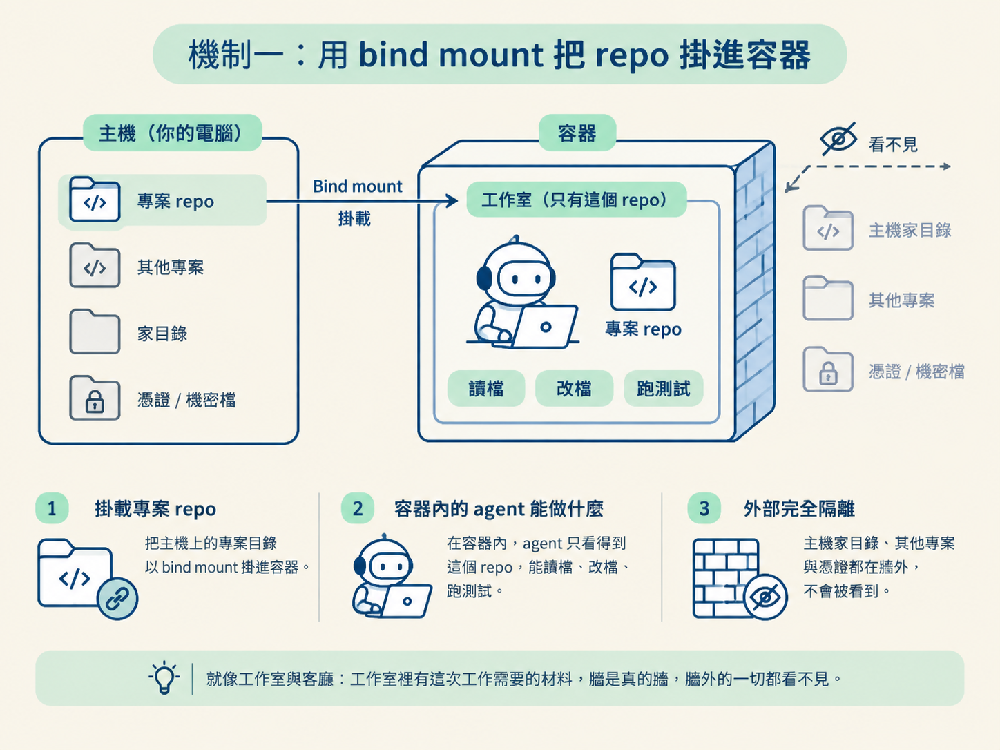
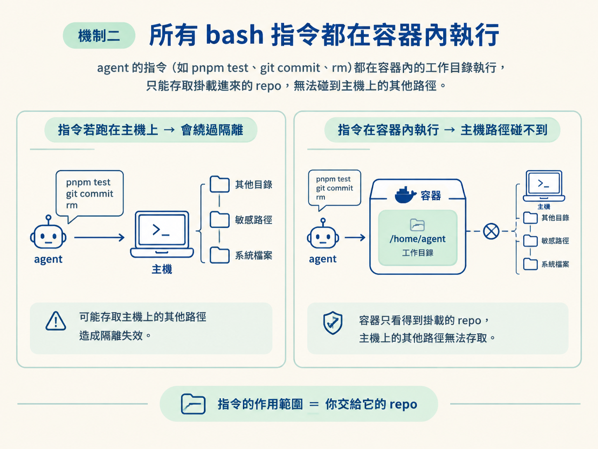
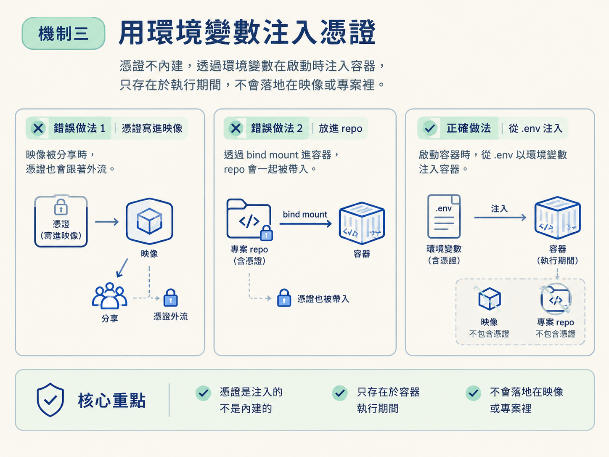

Docker 沙盒靠三個核心機制運作：用 bind mount 只把 repo 交給 agent、讓所有 bash 指令都在容器內執行，以及用環境變數注入憑證。這三件事湊在一起，把 agent 能接觸的範圍縮到最小。
上一課的結論是：想放心把工作交給 agent，就得有真正的隔離。隔離做到位，agent 就算想做壞事也碰不到容器外的東西。
但如果把 agent 關進一個什麼都不能碰的盒子裡，它也就失去用途了。它仍然需要讀取你的 repo、執行測試、修改檔案，甚至建立 commit。
「隔離」真正做的事，是替 agent 畫出活動範圍，而不是把它的能力整個砍掉：邊界內可以工作，邊界外完全碰不到。底下逐一拆開邊界上的三個機制，看它們怎麼同時滿足兩個看似矛盾的要求：agent 看得到專案，卻碰不到你的電腦。
第一個要理解的詞是 bind mount，也就是「綁定掛載」。容器預設擁有一套和外界隔離的檔案系統，裡面不會自動出現你的專案。若直接啟動 agent，它甚至不知道 repo 在哪裡。
bind mount 的作用，是把主機上的某個目錄接到容器裡的某個路徑。對容器內的程式來說，被掛進來的目錄就像原本就在容器裡一樣。
Sandcastle 的沙盒會把你的專案 repo bind mount 進容器。這會同時帶來兩個效果：agent 看得到 repo，能讀檔、改檔和跑測試；但它看不到 repo 以外的內容，也碰不到那些路徑。文件裡「it can still see the repo, but it can only edit files that we choose」這句話，描述的就是這個邊界。
換個生活化的比喻：工作室裡放著這次工作需要的材料，工匠可以在裡面取用、加工；但工作室的牆是真的牆，他看不到客廳裡放了什麼。你的家目錄、其他專案和憑證，都不會因為 agent 進入容器就自動出現在它眼前。

只把檔案掛進容器還不夠，因為 agent 能做的事裡，影響最大的就是執行 bash 指令。如果檔案在容器裡，bash 卻跑在主機上，那麼一行 cd ~ 或一段刪除指令，就可能繞過前面建立的隔離。
Sandcastle 的做法是讓所有 bash 指令都在容器內執行，而且以掛載進來的目錄作為工作範圍。agent 寫下的每一行 pnpm test、git commit 或 rm，實際上都由容器內的環境執行。容器看不到主機上的其他路徑，指令能接觸到的範圍就限制在交給它的內容之內。

這裡還有一個容易忽略的前提：容器必須有明確的工作目錄。Sandcastle 的 Dockerfile 將工作目錄設為 /home/agent，讓 agent 一進入容器就有固定的落腳處，所有相對路徑也都會以這個目錄為基準。
工作目錄本身不是安全機制，但它讓「指令在容器內、從固定位置開始執行」這件事變得清楚且一致。
第三個機制處理的是認證問題。這裡的 agent 是 Claude Code，它需要一組憑證才能呼叫模型。
憑證不能直接寫進映像裡，否則映像一旦被 commit 或分享，憑證也可能跟著外流；也不應該放進 repo，因為 repo 會透過 bind mount 進入容器，憑證就可能一起被帶進去。
Sandcastle 的做法是把環境變數放在一個 .env 檔，啟動容器時再注入。對 agent 來說，環境變數就是完成認證要用的資訊；對主機來說，憑證是用「餵」的送進容器，不是複製到映像或專案裡四處散落。

課程錄製當下使用的是 Anthropic API key，選擇它的原因會在下一步說明。這裡先記住關鍵概念：憑證是注入的，不是內建的。所以憑證的生命週期會跟著沙盒的使用方式走。
把三個機制放在一起，就能看見整條隔離界線。容器內有 Node 22、Claude Code、一個 /home/agent 工作目錄，以及你掛進來的 repo；容器外則是其他一切。
Sandcastle 的 Dockerfile 做的事情也很集中：安裝 Node 22、安裝 Claude Code、把它加入 PATH，並設定工作目錄。完成後，這個環境就交由容器管理。
Dockerfile 不是固定不動的黑盒子，可以照專案需求調整，例如加裝其他工具或變更版本。隔離邊界的形狀也受 Dockerfile 內容影響：你決定容器裡放什麼，就決定 agent 在邊界內能用什麼。
要執行這個容器，首先需要容器執行環境。課程列出兩個選擇：Docker Desktop 和 Podman。
Docker Desktop 免費，但在大型組織裡可能受到授權限制，所以不能說它「到哪裡都免費」。Podman 是自由的開源版本，功能相近，也沒有同樣的授權顧慮，課程才會說「Podman 才是到哪都免費的那個」。
對個人 side project 來說，兩者都能提供同樣的隔離效果。差別主要在於授權條件，以及你偏好的工具生態。
如果你在公司環境中工作，可能會碰到 Docker Desktop 的授權條款，那麼 Podman 會是合適的選擇。如果是個人專案，想使用更普及的文件與生態，Docker Desktop 會比較方便。
回到這一課的主題，兩者提供的核心模型是一樣的：用 bind mount 掛入 repo、在容器內執行指令，以及注入環境變數。不同之處主要不在隔離方式，而在授權問題。
容器隔離並沒有砍掉 agent 的能力，只是替它畫出清楚的邊界。這道邊界由三個機制一起撐起來：repo 用 bind mount 掛進容器，agent 看得到專案、看不到其他地方；所有 bash 都在容器內執行，指令能接觸的範圍就限制在交給它的內容；憑證用環境變數注入，不會被寫死在映像裡，也不會散落到 repo。Docker 和 Podman 提供的是同一套隔離模型，主要差別在授權。
現在可以把這三個機制收在同一張心智地圖上：repo 是 agent 能動的材料，容器是活動邊界，環境變數是暫時餵進去的認證資訊。搞懂這條界線之後，下一步就是把它實際蓋出來：從 Dockerfile 和 .env 開始，再把容器映像建起來。